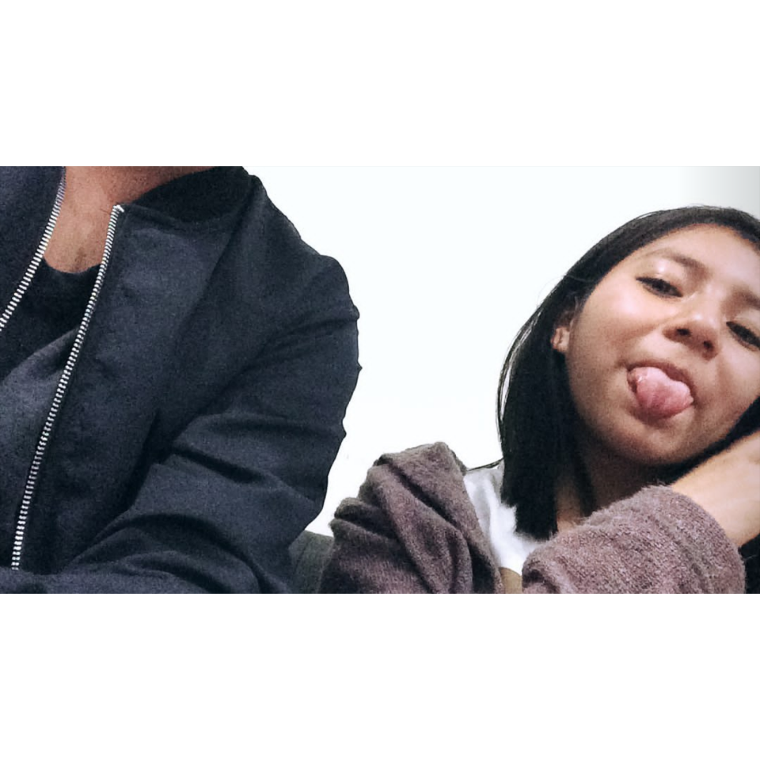

Quiero agradecerte por cada momento que me haces reír,
quiero agradecerte también por todo tu apoyo y, sobre todo,
por motivarme a siempre seguir saliendo adelante.
"No creo que el amor sea ciego porque ha sido mirarte
y volverme loco por ti"
Att: El ing. que te sigue amando.